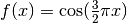

3.5. 验证曲线: 通过绘制评分图来评估模型¶
每个预测模型都有它的优缺点。大体上它的误差由偏差(bias)、方差(variance)和噪声(noise)组成。一个模型的 偏差 指其对于不同的训练样本集，预测结果的平均误差。方差 指模型对于不同训练样本集的敏感程度。噪声则是数据集本身的一项属性。
下表列出了函数  以及该函数一些带噪声的数据。我们用三种不同的模型来拟合该函数: 分别是多项式特征维度为1、4、15的线性回归模型。 我们可以看到第一个模型至多只能糟糕地拟合这些数据和函数，因为该模型太过于简单（偏差）；第二个模型几乎完美预测了结果；而最后一个模型完美拟合了数据，但却没能很好地拟合真实的函数，换句话说，该模型对于不同的训练数据很敏感（方差）。

偏差和方差是预测模型固有的属性，我们通常必须选择合适的学习算法和超参数来尽可能同时降低它们（见 Bias-variance dilemma）。另一种降低方差的方式为使用更多的训练数据。但只有当使用更低方差的模型仍然无法拟合过于复杂的函数时，你才应该着手去收集更多的训练数据。
在简单的一维问题中，我们很容易通过画图来判断模型是否有过大的偏差或方差。但对于高维空间的问题，模型往往很难可视化。因此使用下面介绍的工具往往会很有帮助。
3.5.1. Validation curve 验证曲线¶
要验证一个模型，我们需要一个打分函数（见 Model evaluation: quantifying the quality of predictions），比如对于分类器我们使用准确率来打分。我们应使用grid search算法（见 Grid Search: Searching for estimator parameters）或其他类似算法（能够根据不同的验证集自动选择得分最高的超参数）来为模型选择合适的超参数。注意到如果我们使用验证分数来优化超参数，那么该验证分数是有偏差的，它无法再代表模型的泛化能力。我们需要使用其他测试集来重新评估模型的泛化能力。
然而，有时画出单个超参数与训练分数和验证分数的关系图有助于观察该模型在相应的超参数取值时，是否有过拟合或欠拟合的情况发生。
这时可以使用函数 validation_curve
>>> import numpy as np
>>> from sklearn.learning_curve import validation_curve
>>> from sklearn.datasets import load_iris
>>> from sklearn.linear_model import Ridge
>>> np.random.seed(0)
>>> iris = load_iris()
>>> X, y = iris.data, iris.target
>>> indices = np.arange(y.shape[0])
>>> np.random.shuffle(indices)
>>> X, y = X[indices], y[indices]
>>> train_scores, valid_scores = validation_curve(Ridge(), X, y, "alpha",
... np.logspace(-7, 3, 3))
>>> train_scores
array([[ 0.94..., 0.92..., 0.92...],
[ 0.94..., 0.92..., 0.92...],
[ 0.47..., 0.45..., 0.42...]])
>>> valid_scores
array([[ 0.90..., 0.92..., 0.94...],
[ 0.90..., 0.92..., 0.94...],
[ 0.44..., 0.39..., 0.45...]])
如果训练分数和验证分数都很低，那么模型处于欠拟合的状态。如果训练分数很高但验证分数很低，那么模型处于过拟合的状态。如果训练和验证分数都很高，那么该模型拟合良好。同时出现低训练分数和高验证分数通常情况是不可能的。我们通过改变SVM模型的参数:math:`gamma`在下表中列出了上述三种情况。
3.5.2. Learning curve 学习曲线¶
学习曲线描述了模型对于不同数量的训练数据所得的验证和训练分数。它能够帮助我们判断通过增加训练数据量我们还能得到多少性能提升，以及模型是否更倾向于受到偏差或方差的影响。如果验证分数和训练分数随着训练数据的增加收敛于一个相对较低的值，那么继续增加数据量的收益有限。下图给出了一个例子：朴素贝叶斯模型大致收敛于一个较低的分数。

我们也许需要修改该模型的参数或者更换模型（有着更低的偏差）来学习更复杂的数据。如果当训练数据数量达到最大时，训练分数仍远大于验证分数，那么增加训练数据有助于提升模型的泛化能力。由下图可见，SVM模型受益于更多数量的训练数据。
我们可以使用函数 learning_curve 来得到画出学习曲线所需的参数（使用的样本数量，训练数据集的平均得分，验证数据集的平均得分）:
>>> from sklearn.learning_curve import learning_curve
>>> from sklearn.svm import SVC
>>> train_sizes, train_scores, valid_scores = learning_curve(
... SVC(kernel='linear'), X, y, train_sizes=[50, 80, 110], cv=5)
>>> train_sizes
array([ 50, 80, 110])
>>> train_scores
array([[ 0.98..., 0.98 , 0.98..., 0.98..., 0.98...],
[ 0.98..., 1. , 0.98..., 0.98..., 0.98...],
[ 0.98..., 1. , 0.98..., 0.98..., 0.99...]])
>>> valid_scores
array([[ 1. , 0.93..., 1. , 1. , 0.96...],
[ 1. , 0.96..., 1. , 1. , 0.96...],
[ 1. , 0.96..., 1. , 1. , 0.96...]])